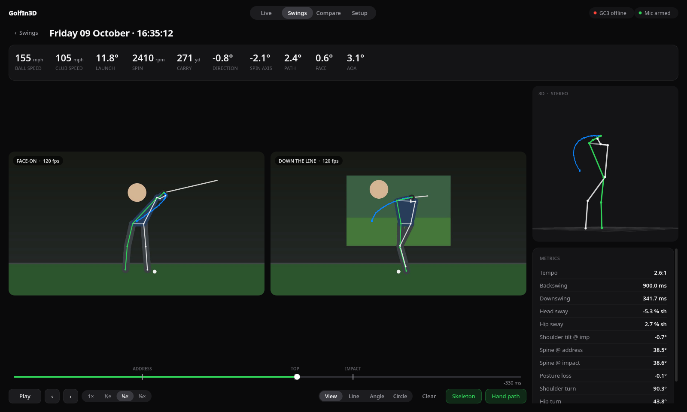
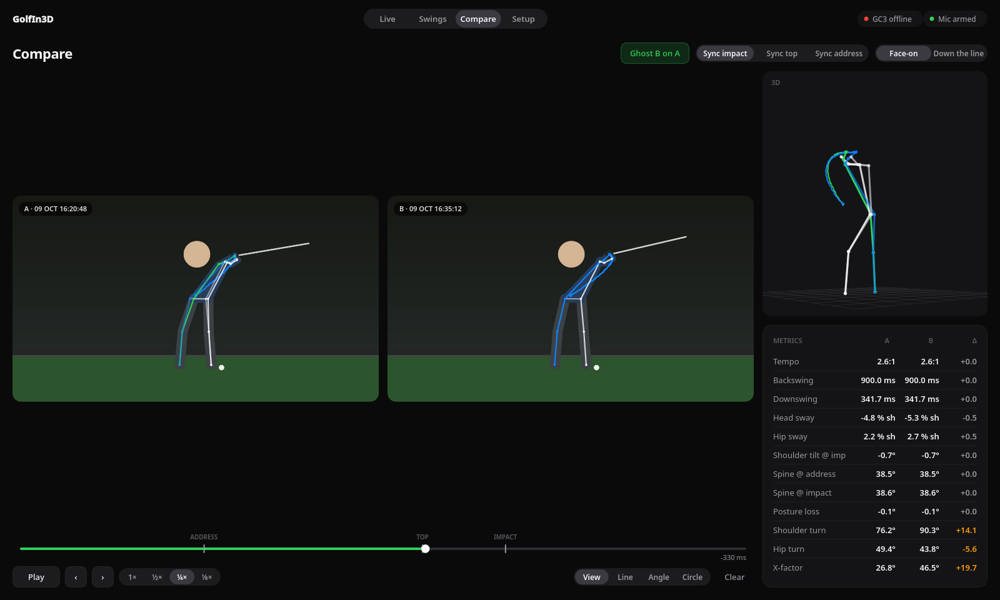
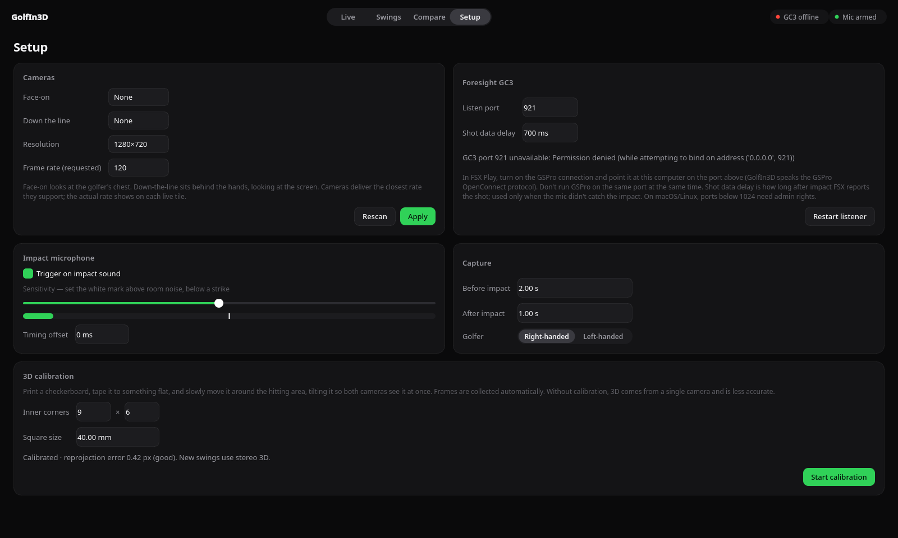

Hit a ball. It's already saved.
A mic hears impact to the millisecond. The GC3 adds ball speed, spin and launch a moment later. No buttons between shots.
Two cameras and your Foresight GC3. GolfIn3D captures each shot, tracks the body, and rebuilds the swing in 3D.

The swing view, shown with a synthetic test swing.
A mic hears impact to the millisecond. The GC3 adds ball speed, spin and launch a moment later. No buttons between shots.

Line them up at impact, top or address. Ghost one skeleton over the other and see every metric change.
Calibrate once with a printed checkerboard. Both camera views are triangulated into real 3D joints.
Example values.
Lines, angles and circles on any frame. Step frame by frame, slow it to ⅛ speed, follow the hand path.
Any USB webcam works. One faces the golfer, one sits down the line facing the screen.
Turn on FSX Play's GSPro connection and point it at GolfIn3D. Shot data flows in automatically.
Wave a printed checkerboard through the bay for a minute. Redo it only if a camera moves.
Every swing lands in your library with video, skeleton, 3D and metrics, ready to review.

Pick cameras, set the mic sensitivity with a live meter, choose how much of the swing to keep, and calibrate. Settings stick between sessions.
Windows SmartScreen and macOS Gatekeeper will warn on first launch. The download section shows how to open it anyway.
The skeleton covers head to ankles. Club path and face come from the GC3, not the video.
A three-second, two-camera clip at 120 fps takes about 10 to 20 seconds to analyse. The video is ready to watch instantly.
Frames are timestamped on arrival. Fine for coaching, not for sub-millisecond biomechanics research.
Intel Macs can run from source. Port 921 needs admin rights on macOS and Linux.
The capture, 3D and metrics pipeline is verified on generated swings. Real-studio tuning is ongoing.
Free. Version 0.1.0. Runs fully offline after the first launch.
GolfIn3D-Setup-Windows-x64.exe · Windows 10 or 11, 64-bit
GolfIn3D-macOS-arm64.dmg · macOS 13 or later, Apple silicon
GolfIn3D-Linux-x86_64.AppImage · x86_64, glibc 2.35 or newer
chmod +x GolfIn3D-Linux-x86_64.AppImage && ./GolfIn3D-Linux-x86_64.AppImagesudo apt install libportaudio2 or sudo dnf install portaudio.video group if cameras don't show up.git clone https://github.com/kaorii-ako/GolfIn3D && cd GolfIn3D && uv run python -m golfin3dYes. The impact microphone triggers capture on its own, and you can press C to save the last few seconds by hand. You just won't get ball and club numbers next to the swing.
Anything that can send shots over the GSPro OpenConnect protocol. That includes the Foresight GC3 through FSX Play, and many other monitors through their GSPro connectors.
FSX keeps running normally. GSPro can't listen on the same port at the same time, so run GolfIn3D on port 921 or GSPro, not both.
Any UVC USB camera works. For crisp impact frames, pick one that does 120 fps or more with a global shutter, and light the bay well.
Into a GolfIn3D folder in your home directory: two video files, the pose data and a small JSON file per swing. Nothing leaves your computer.
It depends mostly on calibration. Setup shows the reprojection error; under 1 px is good. Without calibration it falls back to single-camera 3D, which shows the shape of the swing but shouldn't be trusted for exact numbers.
Yes, and the source is on GitHub.